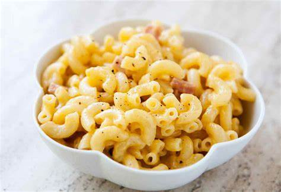

Classic Macaroni Salad

This flavorful macaroni salad is easy to make and is the perfect crowd-pleasing dish to bring to your next picnic or potluck.
The word "macaroni" is often used synonymously with elbow-shaped macaroni, as it is the variety most often used in macaroni and cheese recipes.
Ingredients
- Macaroni
- Condiments
- Sugar and Vinegar
- Seasonings
- Vegetables
Steps
- Cook the macaroni in salted water.
- Mix the mayonnaise, usgar, vinegar, mustard, and seasonings together.
- Stir in the macaroni and remaining ingredients. Chill in the refrigerator.